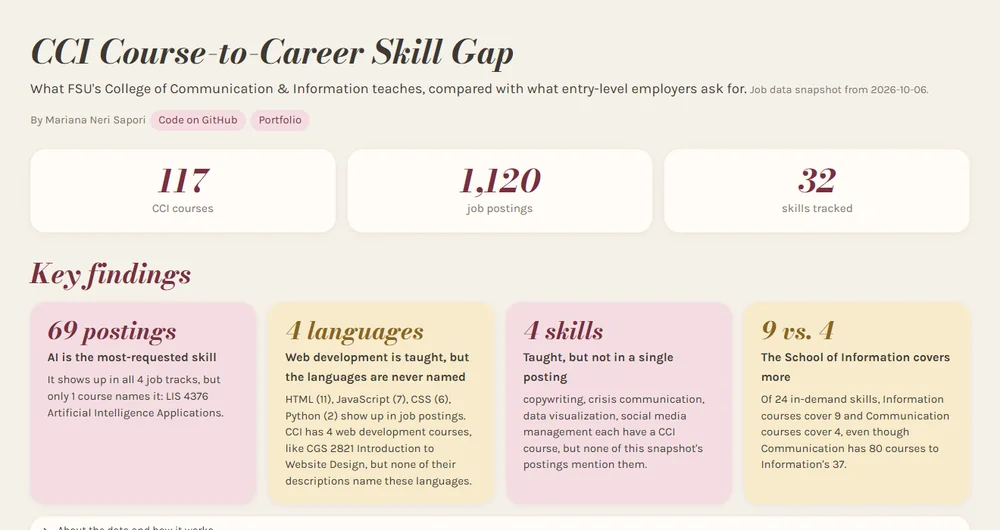

2026 · Solo project
CCI Course-to-Career Skill Gap Dashboard
Goals & scope
- Goal: find out whether FSU's College of Communication & Information (CCI) teaches the skills entry-level employers actually ask for.
- Scope: all 117 CCI undergraduate courses compared against 1,120 job postings from the Adzuna API, across 4 career tracks and 32 skills.
- Key finding: AI was the most-requested skill, yet only one CCI course names it.
My role
- Solo project: I came up with the research question, chose the data sources, the job search terms and the skills list, and checked the results for accuracy.
- Built the Python + SQL pipeline and Streamlit dashboard with the help of AI coding tools, directing the design and verifying every finding against the data.
- Decided what was safe to publish, sharing only a trimmed database without the job posting text.